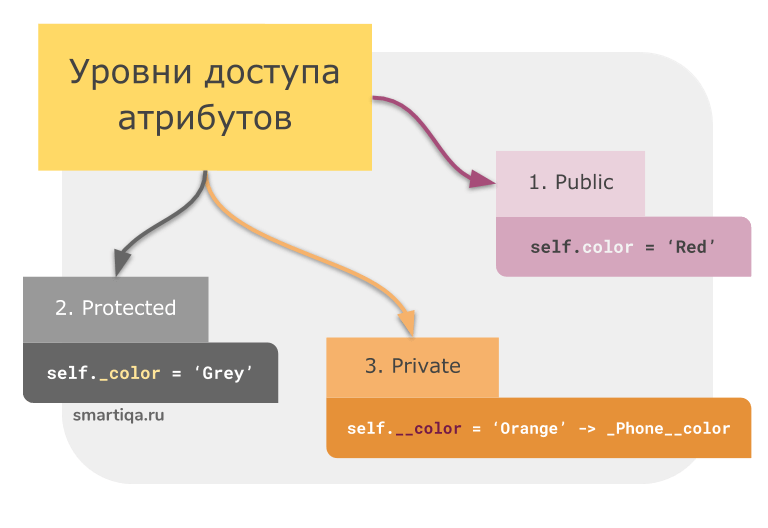

| Тема 1. Уровни доступа атрибутов в Python. | ||
| Назад | ||
|
В классических языках программирования (таких как C++ и Java)
доступ к ресурсам класса реализуется с помощью служебных слов
public, private и protected: Private. Приватные члены класса недоступны извне - с ними можно работать только внутри класса.Public. Публичные методы наоборот - открыты для работы снаружи и, как правило, объявляются публичными сразу по-умолчанию. Protected. Доступ к защищенным ресурсам класса возможен только внутри этого класса и также внутри унаследованных от него классов (иными словами, внутри классов-потомков). Больше никто доступа к ним не имеет. С точки зрения разграничения доступа к атрибутам класса Python является особенным языком - в нем отсутствует механизм, который мог бы запретить доступ к переменной или методу внутри класса. Вместо этого создатели Python предложили соглашение, в соответствии с которым:
 Все члены класса в Python являются публичными по умолчанию. Любой член класса может быть доступен за пределами самого класса. Вот так выглядит создание и работа с публичными (public) методами в Python: class Phone:
def __init__(self, color):
# Объявляем публично поле color
self.color = color
>>> from phone import Phone
# Создаем экземпляр класса Phone
>>> phone = Phone('Grey')
# Обращаемся к свойству color
>>> phone.color
'Grey'
# Изменяем свойство color
>>> phone.color = 'Red'
>>> phone.color
'Red'
Как видите, никаких проблем. Идем дальше. Как мы уже сказали, в соотвествии с соглашением чтобы сделать атрибут класса защищенным (protected), необходимо добавить к имени символ подчеркивания _ . Как, например, здесь: class Phone:
def __init__(self, color):
# Объявляем защищенное поле _color
self._color = color
Однако по факту в Python такой атрибут все равно будет доступен снаружи класса. Вы все еще можете выполнить операции, которые мы рассмотрели выше: # Создаем экземпляр класса Phone
>>> phone = Phone('Grey')
# Обращаемся к защищенному свойству _color
>>> phone._color
'Grey'
# Изменяем защищенное свойство _color
>>> phone._color = 'Red'
>>> phone._color
'Red'
Иными словами, это больше вопрос ответственности программиста - он не должен работать с атрибутами, имена которых начинаются с нижнего подчёркивания _ , снаружи класса. class Phone:
def __init__(self, color):
# Объявляем приватное поле __color
self.__color = color
>>> from phone import Phone
>>> phone = Phone('Grey')
# Пытаемся обратиться к приватному свойству и получаем ошибку
>>> phone.__color
Traceback (most recent call last):
File "
Однако если мы заглянем в список атрибутов нашего класса, то увидим, что на самом деле наше свойство просто получило другое имя. И как вы уже наверное догадались, оно все еще доступно извне, но теперь уже по другому имени: # Получаем список атрибутов класса, в котором находим новое имя свойства: '_Phone__color' >>> dir(phone) ['_Phone__color', '__class__', '__delattr__', '__dict__', '__dir__', '__doc__', '__eq__', '__format__', '__ge__', '__getattribute__', '__gt__', '__hash__', '__init__', '__init_subclass__', '__le__', '__lt__', '__module__', '__ne__', '__new__', '__reduce__', '__reduce_ex__', '__repr__', '__setattr__', '__sizeof__', '__str__', '__subclasshook__', '__weakref__'] # Обращаемся к защищенному свойству по новому имени >>> phone._Phone__color 'Grey' # Меняем значение защищенного свойства >>> phone._Phone__color = 'Blue' >>> phone._Phone__color 'Blue'Итоги
|
||
| Конспект подготовлен Бакулиным А. М. 2012 год. | ||